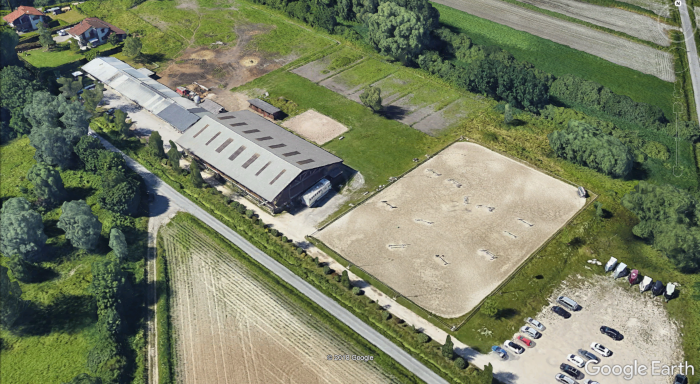

<!DOCTYPE html>
<html lang="fr">

<head>
    <title>CE XXX</title>
    <meta charset="UTF-8">
    <meta name="viewport" content="width=device-width, initial-scale=1.0">
    <link rel="stylesheet" href="/css/bootstrap.min.css">
    <link rel="stylesheet" href="/css/bootstrap-grid.min.css">
    <link rel="stylesheet" href="/css/styleCE.css">
</head>
</html>

<body>
    <!-- le menu de navigation -->
    <nav>
        <span>CE XXXX</span>
        <ul>
            <li>
                <a href="#">Accueil</a> 
            </li>
            <li>
                <a href="/pages/installations.html">Installations</a> 
            </li>
            <li>
                <a href="/pages/horaires.html">Horaires</a>
            </li>
        </ul>
    </nav>
    <!-- le contenu de la page -->
    
    <div class="container" >
        <h1>Bienvenue au centre équestre XXX</h1>
        <div class="row">
            <div class="col-8 col-md-6">
                <figure>
                    
                </figure>
            </div>

            <div class="col-8 col-md-6">
                <p>
                    Situé en pleine campagne, à 10min de XXXX, le centre équestre
                    de XXX permet aux cavaliers de tous niveaux,
                    du débutant au compétiteur confirmé, d'assouvir leur passion
                    pour l'équitation.
                </p>
                <p>Le club dispose d'équipements de qualité qui permettront aux cavaliers d'exercer
                    leurs activités (ballade, dressage, CSO (saut d'obstacle), cross country)
                    dans les meilleures conditions:
                </p>
                <ol>
                    <li>un <a href="/pages/installations.html#manege">manège couvert</a>,</li>
                    <li>une <a href="/pages/installations.html#carriere">carrière extérieure</a>,</li>
                    <li>des <a href="/pages/installations.html#boxes">boxes</a> pour accueillir les chevaux de propriétaires,</li>
                    <li>un <a href="/pages/installations.html#camion">camion de transport</a> pour les concours.</li>
                </ol>
            </div>
        </div>

        <div class="row">
            <div class="col-8 col-md-5">
                <p>
                    Le club est agrée par la <a href="http://www.ffe.com/" target="_blank">Fédération Française d'Equitation (FFE)</a> et dispose
                    du label de qualité Ecole Française d'Equitation. Les moniteurs Patrick, Anne-Sophie et Audrey
                    sont tous diplômés d'Etat.
                </p>
            </div>
            <div class="col-8 col-md-2">
                <figure>
                    
                </figure>
            </div>
            <div class="col-8 col-md-5">
                <p>
                    Résolument orienté vers la pratique sportive, le club participe régulièrement aux compétitions avec des
                    résultats
                    en divisions amateur et pro et bénéficie du label de qualité Ecurie de Compétition.
                </p>
            </div>
        </div>
    </div>
</body>

</html>